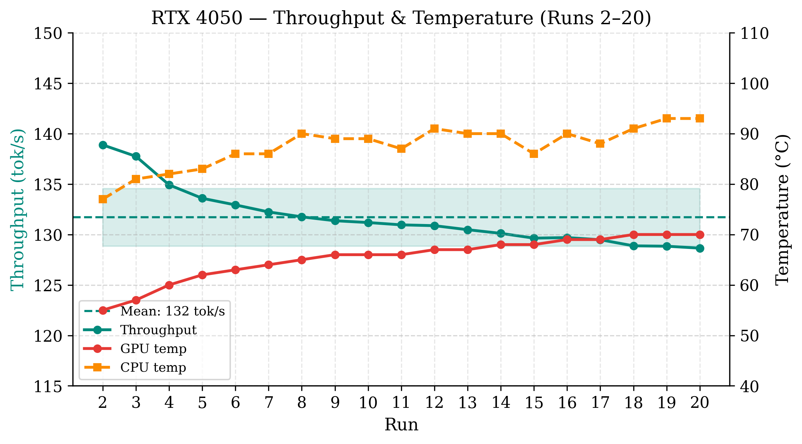
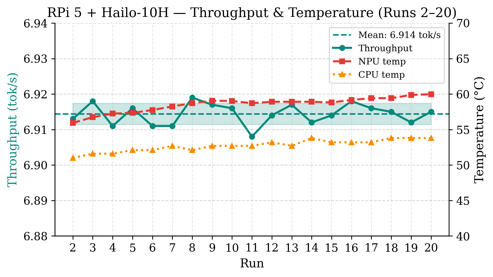
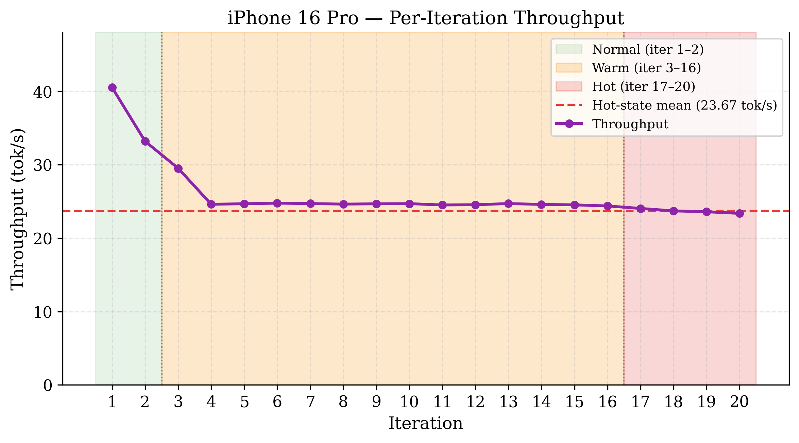
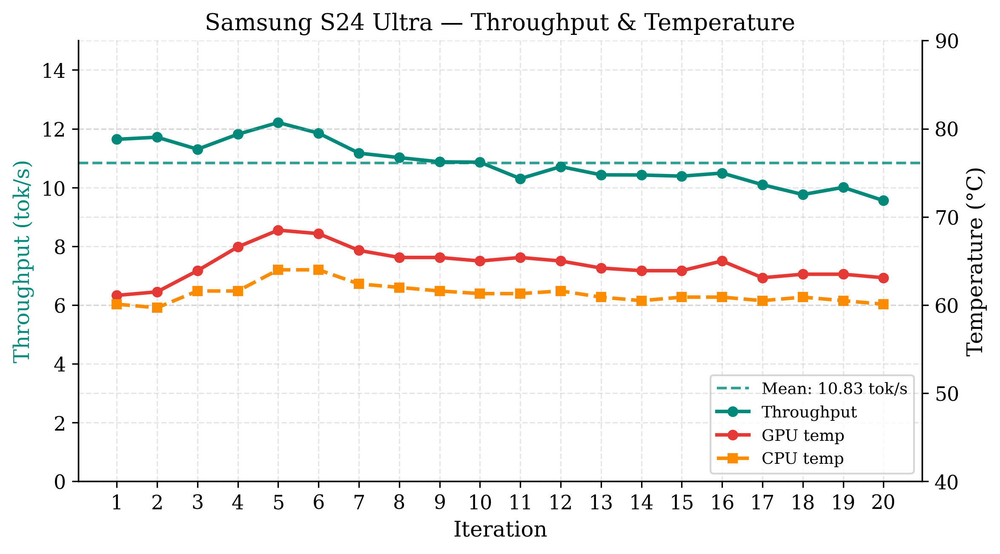

Deploying large language models on-device for always-on personal agents demands sustained inference from hardware tightly constrained in power, thermal envelope, and memory. We benchmark Qwen 2.5 1.5B (4-bit quantised) across four platforms: a Raspberry Pi 5 with Hailo-10H NPU, a Samsung Galaxy S24 Ultra, an iPhone 16 Pro, and a laptop NVIDIA RTX 4050 GPU. Using a fixed 258-token prompt over 20 warm-condition iterations per device, we measure throughput, latency, power, and thermal behaviour. For mobile platforms, thermal management supersedes peak compute as the primary constraint: the iPhone 16 Pro loses nearly half its throughput within two iterations, and the S24 Ultra suffers a hard OS-enforced GPU frequency floor that terminates inference entirely. On dedicated hardware, distinct constraints dominate: the RTX 4050 is bounded by its battery power ceiling, while the Hailo-10H is limited by on-module memory bandwidth. The RTX 4050 sustains 131.7 tok/s at 34.1 W; the Hailo-10H sustains 6.9 tok/s at under 2 W with near-zero variance, matching the RTX 4050 in energy proportionality at 19× lower throughput. Results should be interpreted as platform-level deployment characterisations for a single model and prompt type, reflecting hardware and software combined, rather than general claims about hardware capability alone.
Results
Simplified summary — see the paper for full methodology, error bars, and per-run data.
| Platform | Throughput | Power | Energy / token |
|---|---|---|---|
| RTX 4050 (laptop GPU) | 131.7 tok/s | 34.1 W | 297.3 mJ |
| iPhone 16 Pro (Hot state) | 23.7 tok/s | — | — |
| Galaxy S24 Ultra (plateau) | 10.4 tok/s | 1.49 W | 143.0 mJ |
| RPi 5 + Hailo-10H NPU | 6.9 tok/s | 1.87 W | 270.5 mJ |




The headline result: no single platform wins outright. Each occupies a distinct throughput/power/stability point, and mobile devices are gated by thermals long before they're gated by raw compute.